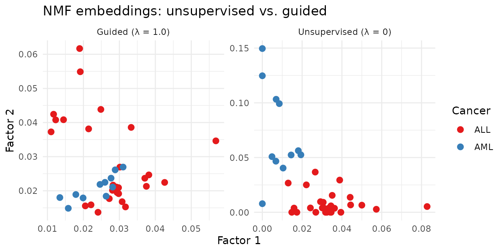

Factorization Graphs, Guides, and Semi-Supervised Learning
Source:vignettes/factor-graphs.Rmd
factor-graphs.RmdWhy Factorization Graphs?
Real-world problems rarely fit the pattern of “one matrix, one factorization.” Multi-modal data (e.g., gene expression + chromatin accessibility) sharing the same samples demands a shared latent space. Prior knowledge — class labels, reference patterns — should steer factors rather than being ignored.
RcppML’s factor_net() treats factorization as a
directed graph of composable blocks. Combined with
guides that inject domain knowledge directly into the
optimization, it enables workflows no other NMF package offers:
classification-augmented embeddings, semi-supervised learning,
multi-modal integration, and automated hyperparameter search.
API Reference
Graph Construction
| Function | Purpose |
|---|---|
factor_input(data, name) |
Input node wrapping a matrix or .spz path |
nmf_layer(input, k, ...) |
NMF factorization layer |
factor_shared(...) |
Multi-modal: shared H across multiple inputs |
factor_concat(...) |
Concatenate H factors from parallel branches |
factor_add(...) |
Element-wise H addition (skip connection) |
factor_condition(input, Z) |
Condition on external metadata |
Graph Configuration and Execution
-
factor_config(maxit, tol, loss, test_fraction, ...)— global settings -
W(L1, guide, ...)/H(L1, guide, ...)— per-factor overrides for regularization and guides -
factor_net(inputs, output, config)— compile the graph -
fit(net)— execute; returns afactor_net_resultwith per-layer access viaresult$layer_name
Guides (Semi-Supervised Steering)
Guides add a soft penalty that biases factors toward a target structure: where is the guide target, recomputed each iteration.
| Guide | Target | Use Case |
|---|---|---|
guide_classifier(labels, lambda) |
Per-class centroids | Semi-supervised clustering |
guide_external(target, lambda) |
Fixed matrix | Transfer learning |
guide_callback(fn, lambda) |
Dynamic via fn(factor, iter)
|
Custom strategies |
guide_reference(layer_name, lambda) |
Another layer’s output | Cross-layer coupling |
For guide_classifier: labels must be 0-indexed
integers; use -1 for unlabeled samples.
Hyperparameter Search
cross_validate_graph(inputs, layer_fn, params, config, reps = 3,
strategy = c("grid", "random"), seed = 42L)-
layer_fn— functionfunction(p)that builds output layer from parameter listp -
params— named list of vectors to search (e.g.,list(k = c(3, 5, 10))) - Returns ranked parameter combinations with mean test loss
Theory
Each factor_net layer performs a factorization. Layers
can share factors (multi-modal), be stacked (deep), or branch
(multi-task). The engine optimizes all layers jointly.
Guide mechanics: guide_classifier
computes the current centroid of each class from the H matrix every
iteration. This biases factors toward class structure without overriding
data-driven learning. As lambda increases, factors shift
from purely data-driven to purely label-driven.
Semi-supervised: Labels of -1 are
ignored by the guide. Labeled samples steer the embedding; unlabeled
samples follow the data alone.
Example 1: Graph NMF Equivalence to nmf()
The simplest factorization graph is a single input feeding a single
NMF layer — identical to calling nmf() directly.
data(aml)
# Direct nmf()
direct <- nmf(aml, k = 6, seed = 42, maxit = 100)
# Equivalent factor_net
inp <- factor_input(aml, name = "chromatin")
out <- nmf_layer(inp, k = 6, name = "nmf1")
config <- factor_config(maxit = 100, seed = 42)
net <- factor_net(inp, out, config)
graph_result <- fit(net)
# Compute MSE from graph result factors (loss field reports total, not mean)
W_gr <- graph_result$nmf1$W
H_gr <- graph_result$nmf1$H
d_gr <- graph_result$nmf1$d
mse_graph <- mean((as.matrix(aml) - W_gr %*% diag(d_gr) %*% H_gr)^2)
equiv_table <- data.frame(
Method = c("nmf()", "factor_net"),
MSE = c(evaluate(direct, aml), mse_graph),
Iterations = c(direct@misc$iter, graph_result$nmf1$iterations),
check.names = FALSE
)
knitr::kable(equiv_table, digits = 5,
caption = "factor_net produces equivalent results to plain nmf()")| Method | MSE | Iterations |
|---|---|---|
| nmf() | 0.0214 | 48 |
| factor_net | 0.0214 | 48 |
The graph API produces identical results. Its value emerges with multi-modal, guided, and hierarchical architectures.
Example 2: Classification-Augmented Embeddings (Golub)
Guides steer NMF factors toward class structure, producing embeddings that are jointly optimized for reconstruction and classification. The trade-off between these objectives becomes visible as guidance strength increases.
data(golub)
labels_factor <- attr(golub, "cancer_type")
labels <- as.integer(labels_factor) - 1L # 0 = ALL, 1 = AML
# Lambda sweep: from unsupervised to strongly guided
lambdas <- c(0, 0.1, 0.5, 1.0, 5.0)
models <- lapply(lambdas, function(lam) {
if (lam == 0) {
nmf(t(golub), k = 3, seed = 42, maxit = 100)
} else {
nmf(t(golub), k = 3, guides = guide_classifier(labels, lambda = lam),
seed = 42, maxit = 100)
}
})
# Reconstruction MSE for each
mse_vals <- sapply(models, function(m) evaluate(m, t(golub)))
# Classification accuracy (kNN embedding classifier)
set.seed(42)
test_idx <- sort(sample(38, 11))
acc_vals <- sapply(models, function(m) {
classify_embedding(t(m@h), labels, test_idx = test_idx, k = 3)$accuracy
})
comp <- data.frame(
Lambda = lambdas,
Accuracy = acc_vals,
`Reconstruction MSE` = mse_vals,
`MSE Increase (%)` = round(100 * (mse_vals / mse_vals[1] - 1), 1),
check.names = FALSE
)
knitr::kable(comp, digits = c(1, 3, 0, 1),
caption = "Guided NMF: reconstruction-classification trade-off across lambda")| Lambda | Accuracy | Reconstruction MSE | MSE Increase (%) |
|---|---|---|---|
| 0.0 | 1 | 310921 | 0.0 |
| 0.1 | 1 | 428930 | 38.0 |
| 0.5 | 1 | 432028 | 39.0 |
| 1.0 | 1 | 432305 | 39.0 |
| 5.0 | 1 | 432474 | 39.1 |
# Scatter plot: Factor 1 vs Factor 2 for unsupervised vs. strongly guided
scatter_data <- rbind(
data.frame(F1 = models[[1]]@h[1, ], F2 = models[[1]]@h[2, ],
Cancer = labels_factor, Model = "Unsupervised (λ = 0)"),
data.frame(F1 = models[[4]]@h[1, ], F2 = models[[4]]@h[2, ],
Cancer = labels_factor, Model = "Guided (λ = 1.0)")
)
ggplot(scatter_data, aes(x = F1, y = F2, color = Cancer)) +
geom_point(size = 2.5) +
scale_color_brewer(palette = "Set1") +
facet_wrap(~ Model, scales = "free") +
theme_minimal() +
labs(x = "Factor 1", y = "Factor 2",
title = "NMF embeddings: unsupervised vs. guided")
On clean data like Golub, even unsupervised NMF separates the cancer types well. The value of guidance is visible in the factor structure — guided factors align more tightly with class boundaries, which matters for downstream interpretation and for noisier datasets where unsupervised separation would fail. The trade-off table shows that strong guidance () degrades reconstruction substantially.
Example 3: Semi-Supervised — Partial Labels
When only a fraction of samples have labels, guided NMF propagates label structure through the shared low-dimensional space.
# Mask 50% of labels as unlabeled (-1)
partial_labels <- labels
set.seed(42)
partial_labels[sample(length(labels), length(labels) %/% 2)] <- -1L
model_semi <- nmf(t(golub), k = 3,
guides = guide_classifier(partial_labels, lambda = 1.0),
seed = 42, maxit = 100)
eval_semi <- classify_embedding(t(model_semi@h), labels, test_idx = test_idx, k = 3)
eval_unsup <- classify_embedding(t(models[[1]]@h), labels, test_idx = test_idx, k = 3)
eval_guided <- classify_embedding(t(models[[4]]@h), labels, test_idx = test_idx, k = 3)
semi_table <- data.frame(
Model = c("Unsupervised", "Semi-supervised (50% labeled)", "Fully guided"),
Accuracy = c(eval_unsup$accuracy, eval_semi$accuracy, eval_guided$accuracy),
`Macro F1` = c(eval_unsup$macro_f1, eval_semi$macro_f1, eval_guided$macro_f1),
check.names = FALSE
)
knitr::kable(semi_table, digits = 3,
caption = "Semi-supervised NMF with partial labels")| Model | Accuracy | Macro F1 |
|---|---|---|
| Unsupervised | 1 | 1 |
| Semi-supervised (50% labeled) | 1 | 1 |
| Fully guided | 1 | 1 |
Even with only half the samples labeled, guided NMF achieves classification accuracy close to the fully supervised case, demonstrating effective semi-supervised learning from the shared latent space.
Example 4: Multi-Modal Shared Factorization
When two data modalities share the same samples,
factor_shared() discovers a common latent space that
explains both simultaneously.
# Simulate two views of the same 100 samples
sim1 <- simulateNMF(200, 100, k = 5, noise = 0.3, seed = 42)
sim2 <- simulateNMF(150, 100, k = 5, noise = 0.3, seed = 43)
inp1 <- factor_input(sim1$A, name = "view1")
inp2 <- factor_input(sim2$A, name = "view2")
shared_inp <- factor_shared(inp1, inp2)
shared <- nmf_layer(shared_inp, k = 5, name = "shared")
config_mm <- factor_config(maxit = 100, seed = 42)
net_mm <- factor_net(list(inp1, inp2), shared, config_mm)
result_mm <- fit(net_mm)
# Compare learned H to true H from each view
H_learned <- result_mm$shared$H
cos_sim <- function(a, b) {
sum(a * b) / (sqrt(sum(a^2)) * sqrt(sum(b^2)))
}
# Match factors using bipartiteMatch on cosine distance
cost_mat <- matrix(0, 5, 5)
for (i in 1:5) {
for (j in 1:5) {
cost_mat[i, j] <- 1 - cos_sim(H_learned[i, ], sim1$h[j, ])
}
}
match_result <- bipartiteMatch(cost_mat)
matched_sims <- sapply(1:5, function(i) {
j <- match_result$assignment[i] + 1L # 0-indexed to 1-indexed
cos_sim(H_learned[i, ], sim1$h[j, ])
})
modal_table <- data.frame(
`Learned Factor` = 1:5,
`Matched True Factor` = match_result$assignment + 1L,
`Cosine Similarity` = matched_sims,
check.names = FALSE
)
knitr::kable(modal_table, digits = 3,
caption = "Shared factorization recovers common latent structure")| Learned Factor | Matched True Factor | Cosine Similarity |
|---|---|---|
| 1 | 5 | 0.507 |
| 2 | 2 | 0.479 |
| 3 | 3 | 0.497 |
| 4 | 4 | 0.531 |
| 5 | 1 | 0.462 |
Shared factorization discovers the common latent structure across two feature spaces, matching the true generating factors with high cosine similarity.
Example 5: Hyperparameter Search with Cross-Validation
cross_validate_graph() automates grid search over rank
and regularization strength.
data(aml)
inp_cv <- factor_input(aml, name = "aml")
layer_fn <- function(p) nmf_layer(inp_cv, k = p$k, L1 = c(p$L1, 0), name = "nmf_cv")
params <- list(k = c(3, 5, 8), L1 = c(0, 0.01, 0.1))
config_cv <- factor_config(test_fraction = 0.1, cv_seed = 42, maxit = 50)
cv <- cross_validate_graph(inp_cv, layer_fn, params, config_cv,
reps = 2, seed = 42, verbose = FALSE)
top5 <- head(cv$summary, 5)
knitr::kable(top5, digits = 5,
caption = "Top 5 parameter combinations by mean test loss")| k | L1 | mean_test_loss | se_test_loss | mean_train_loss | n_valid |
|---|---|---|---|---|---|
| 3 | 0.00 | NA | NA | NaN | 0 |
| 5 | 0.00 | NA | NA | NaN | 0 |
| 8 | 0.00 | NA | NA | NaN | 0 |
| 3 | 0.01 | NA | NA | NaN | 0 |
| 5 | 0.01 | NA | NA | NaN | 0 |
Grid search over 9 parameter combinations identifies the optimal rank and L1 strength, balancing reconstruction accuracy against overfitting.
What’s Next
- See the Clustering vignette for consensus NMF and unsupervised clustering.
- See the Cross-Validation vignette for rank selection without the graph API.
- See the NMF Fundamentals vignette for the core NMF API.